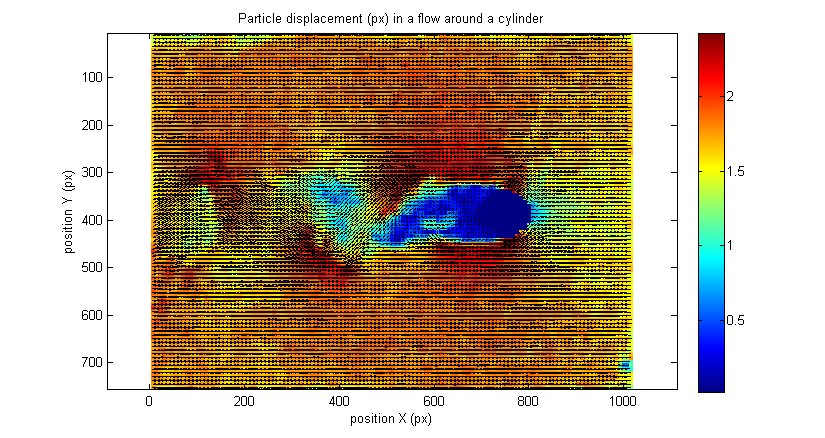
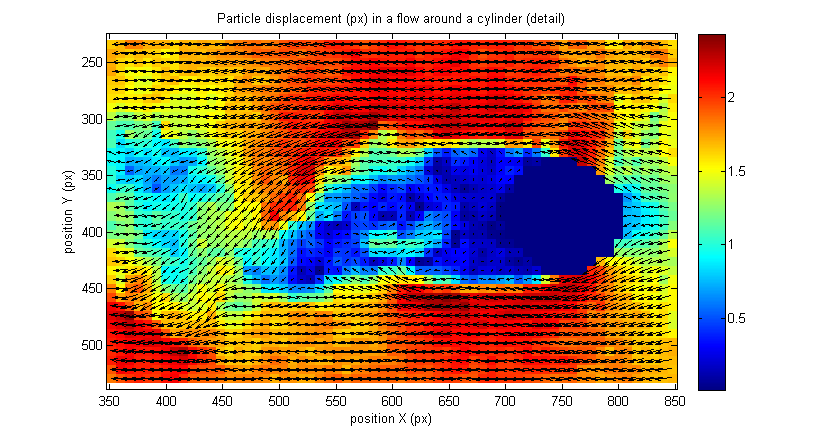
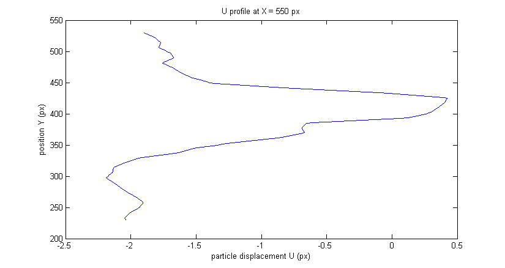

Example 01 - Simple usage of PIVsuite
This example demonstrates the simplest possible use of PIVsuite for obtaining the velocity field from a pair of images. For running this example, you need Matlab 2013a or higher.
Contents
Before running PIVsuite
Initialize the variable pivPar, in which parameters of PIV algorithm (such as interrogation area size) are defined. Initialize also variable pivData, to which results will be stored.
clear; pivPar = []; % variable for settings pivData = []; % variable for storing results
Define image pair to be treated. The best way is to store image's paths and filenames:
im1 = ['..',filesep,'Data',filesep,'Test von Karman',filesep,'PIVlab_Karman_01.bmp']; im2 = ['..',filesep,'Data',filesep,'Test von Karman',filesep,'PIVlab_Karman_02.bmp'];
These images (kindly provided by William Thielicke) show a flow around a cylinder.
The velocity field should not be evaluated inside the cylinder. For this reason a mask is provided, and particle motion is not searched inside masked area. The mask is defined by an image file (black-and- white format) in this example. The masking image has pixel value of 0 for masked area (inside the cylinder), and 1 for unmasked area (flow region). Store the mask to pivPar variable.
imMask = ['..',filesep,'Data',filesep,'Test von Karman',filesep,'PIVlab_Karman_mask.png']; pivPar.imMask1 = imMask; % mask for first image pivPar.imMask2 = imMask; % mask for the second image
Default settings for PIV algorithm
PIVsuite has many settings. Tell to PIV suite to use the default settings, which will work well in most cases:
[pivPar, pivData] = pivParams(pivData,pivPar,'defaults');
Run the analysis
For PIV analysis of an image pair, execute the following command (treatment migth take from seconds to few minutes):
[pivData] = pivAnalyzeImagePair(im1,im2,pivData,pivPar);
Visualize results
The variable pivData contains now results of the PIV analysis. Use command "pivQuiver" to show the velocity field. We will show a color background with velocity magnitude, overlaid by velocity vectors (quiver plot):
figure(1); pivQuiver(pivData,... 'Umag',... % show background with magnitude 'quiver','linespec','-k'); % show quiver vectors shown in black title('Particle displacement (px) in a flow around a cylinder'); xlabel('position X (px)'); ylabel('position Y (px)');
Previous figure is too small. Show another figure, showing flow details around the cylinder:
figure(2); pivQuiver(pivData,... 'crop',[350,850,230,530],... % set cropping 'Umag',... % show background with magnitude 'quiver','linespec','-k'); % show quiver vectors shown in black title('Particle displacement (px) in a flow around a cylinder (detail)'); xlabel('position X (px)'); ylabel('position Y (px)');
Extract data
Velocity field is stored in variable pivData in the following fields:
- X ... horizontal position of velocity vectors (in pixels from the left of the image)
- Y ... vertical position of velocity vectors (in pixels from the top of the image)
- U ... horizontal component of the velocity (particle displacement between the two images, in pixels, positive value pointing to the rigth)
- V ... vertical component of the velocity (particle displacement between the two images, in pixels, positive value pointing downward).
Interpolate the data to show a velocity profile. In this example, a profile of U component is shown for X = 550:
% interpolate data for desired position y = (230:530)'; x = 550 + zeros(size(y)); u = interp2(pivData.X,pivData.Y,pivData.U,x,y); % plot velocity profile figure(3); plot(u,y,'-b'); title('U profile at X = 550 px'); xlabel('particle displacement U (px)'); ylabel('position Y (px)');
Get a number of invalid velocity vectors.
fprintf('Grid points: %d. Masked vectors: %d. Spurious vectors: %d. Computational time: %f\n',... pivData.N,pivData.maskedN,pivData.spuriousN,sum(pivData.infCompTime));
Grid points: 11938. Masked vectors: 131. Spurious vectors: 522. Computational time: 15.509374